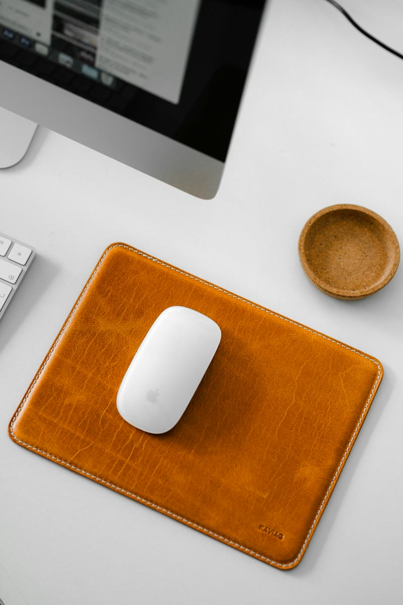

Minimalist Desk Setup: The Essentials and What to Skip
How to build a minimalist desk setup: the few essentials worth having, the common extras worth skipping, and simple habits that keep a desk clean.

In this guide
A minimalist desk is not an empty desk. It is a desk where everything on it has a job, and nothing is there out of habit. The payoff is a workspace that looks calm every time you sit down and is quick to clean. This guide covers the essentials worth having, the extras you can skip, and the habits that keep it that way.
The principle: function first, then fewer and better
Start by listing what you actually do at your desk: typing, reading, video calls, writing by hand, gaming. Each activity justifies a small set of tools. Anything that does not support one of them is a candidate to remove. Once you have the short list, choose versions that look good together, with a limited palette of materials such as wood, leather, metal or matte black.
The essentials
A defined work surface
A desk pad is the quickest way to make a desk look put together. It frames the working area, gives the mouse a consistent surface, and covers a worn or cold desktop.
A compact keyboard
A 75 percent layout keeps the arrow keys and function row but drops the number pad, which saves width and lets the mouse sit closer. Wireless removes one more cable from view.
If you type for long stretches, a wrist rest in a matching material keeps the look consistent and gives your wrists a place to rest between bursts of typing.
A comfortable mouse
One good mouse beats a drawer of spares. Choose a shape that fits your hand and, ideally, a wireless model so there is nothing trailing across the pad.
Light that stays out of the way
A clamp-on swing arm lamp takes no desk space and folds away when you do not need it.
One screen, positioned well
For many people, one well-positioned monitor is enough. A single monitor arm removes the bulky stand and lets you set the height and distance precisely, leaving the space under the screen clear.
A home for the small things
Keys, pens, earbuds and cables need somewhere to go, or they spread across the desk. One tray gives them a boundary. When the tray is full, it is time to clear it out.
Headphones are the other common drifter. A stand gets them off the surface and keeps them within reach.
What to skip
- Multi-compartment organizers. They invite you to keep more things. One simple tray is usually enough.
- A second monitor you rarely use. If it mostly shows a clock or a chat window, a window on your main screen may do.
- Decor for the sake of decor. Pick one or two objects you genuinely like, such as a small plant or a photo, and stop there.
- Visible chargers and power strips. Move them under the desk.
- Paper piles. Keep a single notebook on the desk and file or scan the rest.
- Duplicates. Several pens, spare mice and extra cables add clutter without adding function.
The hidden essential: cable management
A minimal desk falls apart the moment cables are visible. Put a power strip in an under-desk tray, route cables along one path, and clip the one or two charging cables you use daily to the desk edge. The cable management guide walks through it step by step, and the Cable Management Kit lists the parts.
Keep it minimal with a daily reset
Minimal desks stay minimal through habit, not willpower. At the end of each day, take two minutes to return items to the tray, put away anything that does not live on the desk, and push the chair in. Once a month, look at everything on the desk and ask whether it still earns its place.
See every item from this guide in The Clean Minimal Desk. Working with limited space as well? Read our small home office ideas.
Questions, answered
What do I need for a minimalist desk setup?
A defined work surface, a compact keyboard, a comfortable mouse, space-saving light, a well-positioned screen, and one tray for small items. Hidden cable management ties it together.
Is one monitor enough for a minimalist setup?
For many workflows, yes. A single monitor on an arm keeps the desk clear. Add a second only if you regularly need two things visible at once.
How do I keep a minimalist desk clean?
Do a short reset at the end of each day, give small items a single tray, and move chargers and power strips under the desk.
Can a minimalist desk still have personality?
Yes. Choose a consistent palette of materials and one or two objects you genuinely like, rather than many small decorations.